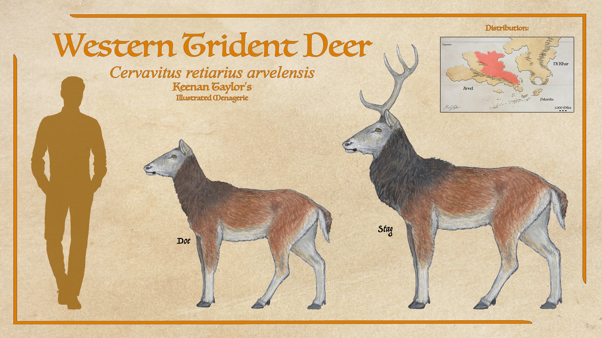
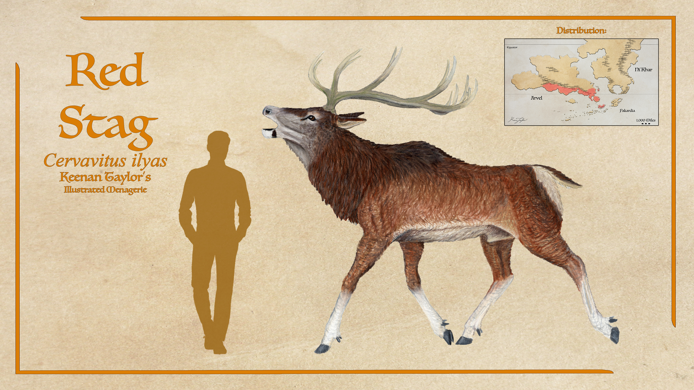
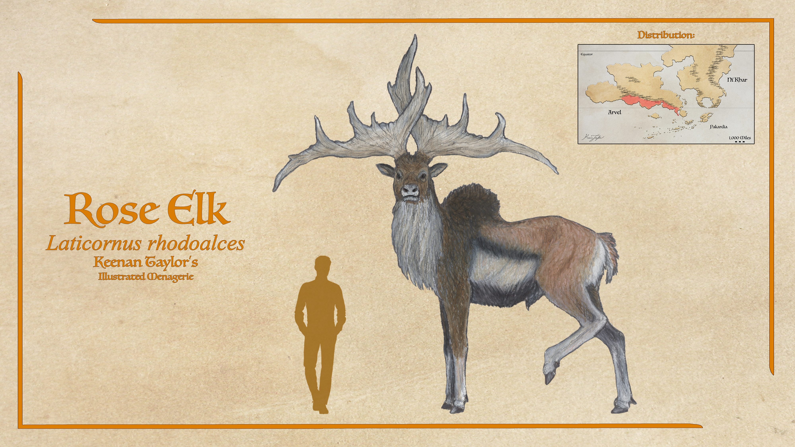
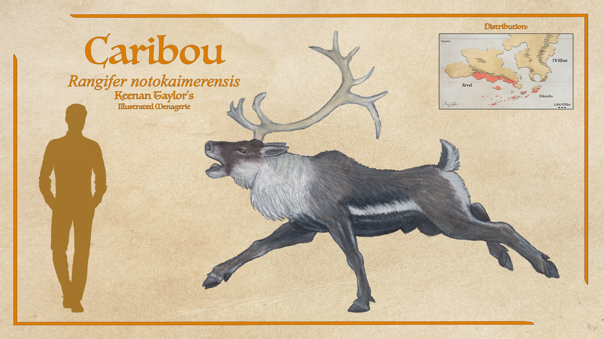
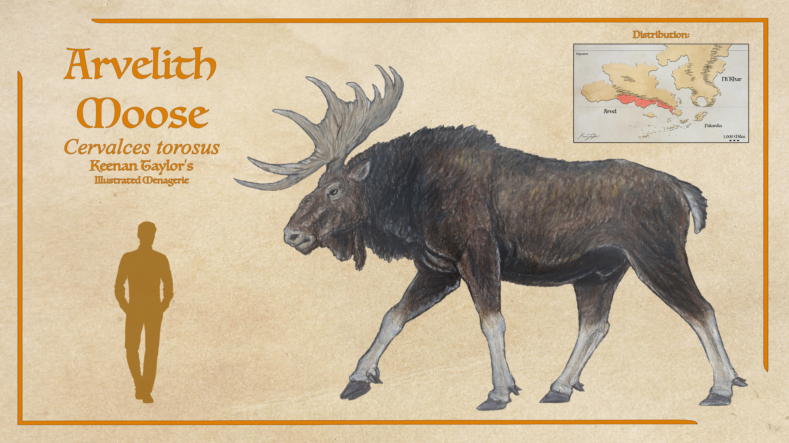
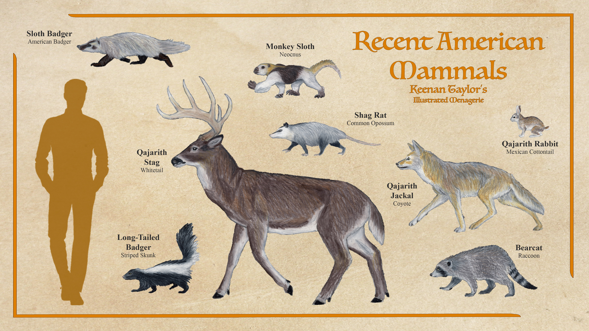

Scientific Classification
| Kingdom | Animalia | Animal | Animals |
|---|---|---|---|
| Phylum | Chordata | Chorda | Corded |
| Class | Mammalia | Mammālis | Of the Breast |
| Infraclass | Placentalia | Placentālis | Placental |
| Superorder | Laurasiatheria | Laurasia + θηρῐ́ον | Wild Beasts of Laurasia |
| Grandorder | Ferungulata | Ferus + Ungulātus | Wild Beasts and Ungulates |
| Mirorder | Euungulata | ἐΰς + Ungulātus | True Ungulates |
| Order | Artiodactyla | ἄρτῐος + δᾰ́κτῠλος | Even-toed |
| Suborder | Ruminantia | Rūmināns | Ruminators |
| Infraorder | Pecora | Pecus | Livestock |
| Parvorder | Bovimorpha | Bõs + μορφή | Bull-Shaped |
| Family | Cervidae | Cervus | Deer |
Taxonomic note: The cervids of Kaimere belong to several lineages introduced through different Harvests, rather than descending from a single introduction followed by a uniform radiation. Their present diversity therefore reflects multiple independent arrivals, subsequent local evolution, and the ecological interactions between introduced deer and the planet's existing fauna.
01 · INTRODUCTION
Overview
The cervids, or deer, are among the most successful introduced herbivores in the Known World, occupying an extraordinary variety of habitats and ecological niches. From the humid closed forests and the conifer-dominated Titan Gardens of Arvel and Ni'Khar to the temperate rainforests of Pakardia and the open expanses of the Houze Prairie, deer have become a defining component of Kaimere's terrestrial ecosystems. Their success is the result of a combination of dietary flexibility, rapid reproduction, speed, and endurance, traits that have allowed them to thrive alongside the planet's diverse native herbivores and formidable predators.
Unlike many of Kaimere's older herbivore lineages, which evolved as specialists within particular ecological communities, the cervids largely arrived as adaptable generalists. Their expansion coincided with a period of severe environmental disruption approximately 1.5 million years ago, when rapid climatic change destabilized established ecosystems and weakened many of the native species that had previously dominated forest meadows and open grasslands. Subsequent Harvests introduced additional deer from Eurasia and the Americas, adding further diversity to an already successful group.
The Titan Gardens are particularly favorable habitat for deer. These open conifer rainforests are maintained in part by the activities of titanosaurs, whose movements create trails, clearings, and meadows throughout the forest understory. Although the canopy is comparatively open, the vegetation remains dominated by ferns and cycads, with angiosperms and grasses occupying suitable clearings and higher elevations. This mosaic of woodland, grassland, and disturbed vegetation provides an abundance of browse and grazing opportunities. Deer exploit these resources alongside thescelosaurs, elasmarians, and other herbivores that follow the titanosaurs through the landscape.
The family's diversity encompasses several distinct ecological strategies. The trident deer of the genus Cervavitus are especially successful in uneven terrain, ranging from humid forests to mountain valleys and steppe margins. Their larger relatives, the red stag and red elk, occupy more substantial herbivore niches, with the latter becoming particularly prominent in Pakardia. The prairie elk and rose elk of Laticornus are specialized grassland inhabitants, combining enormous antlers with exceptional endurance. Smaller deer, including barking deer, roe deer, and fallow deer, exploit forest understories and woodland edges, while caribou inhabit extensive temperate regions and have spread through domestication and feral dispersal. Moose occupy the largest-bodied forest-browsing niche, with the Arvelith moose representing the largest deer currently known on Kaimere.
These animals are also central to the food webs of the Known World. Their abundance supports a wide variety of predators, including canids, large cats, dromaeosaurs, and megaraptorans. The western trident deer, for example, is hunted in the Arvelith Highlands by the sulan, a Homotherium whose combination of speed, endurance, and agility makes it particularly effective in mountainous terrain. Red elk are important prey for the ambush-hunting weochetu'ka, while smaller deer are taken by jackals, birds of prey, and juvenile theropods.
The success of cervids has not come without consequences for other herbivores. Their expansion contributed to the decline of native antilocarpids and protoceratids, as well as the disappearance of many of the larger equids that once occupied the Titan Gardens. These changes were not necessarily the result of inherent superiority; rather, adaptable deer arrived during a period when environmental conditions had undermined the ecological specializations of resident species. Their history illustrates how the timing of an introduction can be as important as the biological characteristics of the animals themselves.
02 · DEEP TIME
Evolutionary History
Early Herbivore Communities
Before the major cervid introductions, the herbivore communities of Kaimere were shaped by the interactions of native lineages, earlier Earth introductions, and the extensive habitat modifications caused by large dinosaurs. During the Tyrant Dynasty, various ornithopods occupied open areas within forested environments. Following the Dynastic Extinction, thescelosaurs became particularly successful in the clearings maintained by titanosaurs and continue to exploit these habitats today.
Early equids eventually joined these communities, occupying some of the same grazing and browsing niches as thescelosaurs. Later introductions of South American ungulates, including litopterns and toxodonts, altered the competitive balance. These animals displaced larger horses and rhinos from many habitats, leaving smaller equids to persist in more restricted ecological roles. Notoungulates proved comparatively successful in the Titan Gardens because of their ability to exploit the tougher vegetation and disturbed environments associated with titanosaur activity.
For millions of years, these herbivore communities remained subject to changes in vegetation, climate, and the distribution of their principal competitors. The Titan Gardens were particularly dynamic environments. The movements of titanosaurs continually created and altered clearings, exposing new feeding opportunities while also changing the distribution of cover. Herbivores capable of exploiting different types of vegetation could benefit from these disturbances, while more specialized species remained dependent on particular conditions.
The arrival of cervids would eventually transform this ecological balance. Their adaptable diets and rapid reproduction made them effective colonizers of disturbed habitats, while their speed and endurance allowed them to evade many pursuit predators. These traits became especially important during the climatic upheaval that ended the Anchored Period.
The Climatic Upheaval and the Southeast Asian Harvest
Approximately 1.5 million years ago, Kaimere experienced a rapid climatic shift unlike anything since the Dynastic Extinction. The precise cause remains uncertain, although a substantial reduction in axial tilt is considered a leading explanation. The change appears to have intensified the contrast between hot and cold latitudes, making tropical regions hotter and more arid while causing high latitudes to become colder. Ocean currents, wind patterns, seasonal cycles, and migration routes were all affected.
The consequences for wildlife were severe. Polar ice expanded, sea levels fell, and wetlands around the inland sea suffered extensive disruption. Even regions that had previously supported relatively mild winters, including Pakardia, the Great Khalin Sea, and southern Arvel, experienced conditions that many native plants were poorly equipped to tolerate. Northern parts of the Known World became more arid, and extensive changes in water availability affected floodplains and wetlands. Falling sea levels also facilitated dispersal between previously separated landmasses, including the formation of a land bridge connecting northern Arvel and Ni'Khar.
Although ecosystems elsewhere on Kaimere and in Kairul could potentially have recovered as the climate returned toward its previous state, the Portal's territory underwent a different process. Faced with the loss of much of its former biomass, the Portal introduced new flora and fauna from regions of Earth with comparable environmental conditions. This response brought numerous organisms from Pleistocene Southeast Asia into the Known World, alongside plants capable of establishing themselves in the disturbed landscapes.
The resulting ecological turnover was immense. In some parts of southern Arvel, introduced plants came to constitute the majority of the regional flora. These changes created new feeding opportunities while undermining the plant communities upon which many native herbivores depended. Among the introduced animals were numerous cervids, which encountered weakened populations of native grazers and browsers.
Before this introduction, antilocarpids and protoceratids had been particularly prominent among the herbivores of forest meadows and open prairie. Both groups survived in some form, but their abundance declined as deer and bovine antelopes expanded. The newcomers were not necessarily better adapted to every environment; instead, their generalist feeding strategies allowed them to exploit the newly established vegetation while many resident specialists struggled with the ecological changes.
The Southeast Asian Harvest consequently marked a turning point in the history of Kaimere's terrestrial herbivores. Cervids became established across a wide range of habitats, and several lineages subsequently diversified into forms that differed considerably from their Earth ancestors.
Later Harvests
Cervid diversity increased further during a northern Eurasian Harvest approximately 700,000 — 600,000 years ago. This introduction brought roe deer and fallow deer into the Known World, where they established themselves in temperate forests and woodland edges. Roe deer became particularly common in the Free-States of Qadan, while fallow deer spread through the forests of Arvel.
These species remained comparatively similar to their Earth ancestors, but their behavior reflects life in an ecosystem containing a far greater diversity of large predators. Fallow deer form substantial herds in productive forests, benefiting from collective vigilance while exploiting seasonal browse, fruit, herbs, and grasses. Roe deer rely more heavily on concealment and tend to live alone or in small family groups, feeding selectively on buds, leaves, fungi, berries, and young saplings.
Caribou have a more complicated introduction history. An earlier population arrived during the Southeast Asian Harvest approximately 1.5 million years ago but subsequently declined under pressure from Homo erectus. A later introduction from northern Eurasia around 600,000 years ago replenished the population's genetic diversity, allowing it to recover and expand. The modern Kaimeran caribou is a distinct species whose populations now occupy much of the temperate Known World. Domestication and feral dispersal have extended its range into the Khalin Islands, southern Pakardia, and Kaishel. In southern Arvel, caribou are among the most abundant large herbivores and frequently associate with wild horses, whose feeding preferences complement their own.
The same northern Eurasian Harvest introduced the ancestral stock of Kaimere's moose. The Arvelith moose, Cervalces torosus, is the largest living deer on Kaimere, with mature bulls commonly weighing between 900 and 1,500 kilograms. Its heavy forequarters, broad hooves, and powerful neck are adapted to forested valleys, river corridors, swamp margins, and other habitats where maneuverability and traction are more important than sustained high speed. Its antlers are large but relatively compact for its body size, minimizing entanglement in dense vegetation.
Island isolation produced smaller forms within the Great Khalin Sea, while the Pakardiant moose occupies an intermediate position in size and build. These regional populations demonstrate how the same ancestral lineage can develop distinct body proportions and antler structures under different ecological conditions.
The most recent major cervid introduction occurred during the Interrupted Harvest approximately 11,000 years ago. This short-lived event brought fauna from late Pleistocene North and Central America into the Known World, in an attempt to replenish the megafauna of Qajar after the devastation caused by the First Children.
The harvest was interrupted before it could establish the broad and genetically diverse populations typical of earlier introductions. Many large animals were killed, while others failed to persist because of small founding populations or competition with established species. The white-tailed deer was among the successful survivors, becoming the Qajarith deer.
The Qajarith deer occupies woodland, savanna edges, and upland forest mosaics, particularly in Qajar. It is a medium-sized cervid with a somewhat more robust neck and forequarters than its Earth ancestor. Its antlers remain important display and combat structures, although they tend to sweep laterally more strongly than those of typical white-tailed deer. Despite its success on the peninsula, it failed to establish itself widely across mainland Arvel, where competition from the established Cervavitus deer limited its expansion.
Modern Diversity and Ecological Influence
The modern cervid fauna is the cumulative result of repeated introductions, environmental upheaval, competition, and regional evolution. Some lineages, such as chital and fallow deer, retain many of their ancestral characteristics. Others, including the enormous red elk, the grassland-specialized Laticornus, and the giant Arvelith moose, have developed distinctive adaptations to Kaimere's environments.
Their influence extends well beyond their own populations. Deer grazing and browsing affect the structure of forest understories and grasslands, while their abundance supports predators throughout the Known World. Their seasonal movements redistribute grazing pressure and connect habitats that might otherwise be used by different herbivore communities. They also compete with other large herbivores, contributing to the decline of native pronghorns and protoceratids and limiting the distribution of some equids.
The evolutionary history of Kaimere's cervids is therefore not simply a story of successful introductions. It is an example of how adaptable animals can reshape ecosystems when they arrive during periods of environmental instability. Through successive Harvests, deer have become one of the most diverse and influential herbivore families on the planet, ranging from small forest browsers to enormous grassland runners and forest giants. Their success reflects the combination of ecological flexibility and historical opportunity that has shaped so much of Kaimere's modern fauna.
03 · SPECIES ACCOUNTS
Known Diversity
The following accounts document representative felids recorded in the encyclopedia. Select a species to consult its individual natural history and descriptive account.
Ni'Khari Chital

Axis zerinao
In the Southeast Asian Harvest, the chital deer arrived in wetland habitats, and still hold major success in the Ni'Khari wetland forests. The Ni'Khari chital occupies the Crescent and western Ni'Khar with surprisingly little evolutionary change. Retaining the elegant spotted coat characteristic of its Earth ancestors, the chital depends upon broken sunlight filtering through swamp canopies for camouflage. Adults weigh between 60 and 100 kilograms, with bucks carrying graceful three-tined antlers that are shed and regrown annually. Unlike the comparatively solitary roe deer, chital live in cohesive mixed-sex herds that may exceed fifty individuals in productive wetlands.
Read species article →Arvelith Fallow

Dama sp.
The Arvelith fallow deer has become the dominant medium-sized cervid throughout Arvel's forests. Descended from Eurasian fallow deer introduced during the same harvest as the roe deer, it has changed little anatomically while adapting behaviorally to coexist with Kaimere's far richer predator community. Bucks are distinguished by broad palmate antlers that may span over a meter in mature individuals. During autumn they establish rutting grounds within forest glades, where roaring contests and ritualized antler wrestling determine breeding rights. Because predators frequently patrol these gatherings, rutting males remain unusually vigilant compared with their Earth relatives, often interrupting displays to scan for danger.
Read species article →Western Trident Deer

Cervavitus retiarius arvelensis
The western trident deer is an abundant species found in the central, northern and eastern regions of Arvel. While found throughout Arvel, they are most abundant in the highlands north of the mountain range. While they can get by on most vegetation, trident deer favor grass. Several hundred large herds congregate on the grassy vales around an interior mountain range. To get there, they must march up a few dozen valleys, including the one our twins grew up in. They often traverse higher up the valleys to avoid predators, drinking and grazing along holler creeks rather than risk exposure down by the rivers, though some take the more dangerous yet faster route along the shore.
Read species article →Red Stag

Cervavitus ilyas
Another species of Cervavitus, the red stag or ilyas in the common tongue, is found on much of Arvel and the temperate Known World. They are mixed feeders that favor grass. After the red elk of Pakardia, they are the largest member of their genus. They are comfortable swimmers, allowing them to pass through the many small islands and enabling them to grow much larger than a landlocked island species would be. This has allowed for their expansion into Qajar from the southern Arvelith steppes and into the Free-States.
Read species article →Red Elk

Cervavitus sp.
The red elk or tamoti is a large and revered species of Cervavitus. With bulls often reaching a ton and antlers spanning four to six feet, they are imposing animals. Like the stags of Europe, red elk are associated with nobility, composure, and prestige. The haunting bugles of males is regarded as a mark of a healthy forest by the Pakardiant. They are favored game of hunters throughout Kaimere, especially by the Pakardiant, highly regarded for their quality taste and texture and using their antlers for display. They live in smaller groups than others of their clade, with most herds having fewer than a dozen animals. Like trident deer they are found on every continent, but aren't as common in their range as their smaller cousins except on Pakardia, where they are the most common large mammal.
Read species article →Prairie Elk

Laticornus sp.
The houze prairie is home to the prairie elk, a deer descend from a cervid ancestor harvested from Asia approximately 1.5 million years ago. Comparative morphological and genetic inference places this ancestral stock closest to the giant Pleistocene deer lineages of Earth, particularly Megaloceros and Sinomegaceros. Although not as fast as some residents of the prairie, these highly cursorial deer are legendary in their fortitude, being one of the few animals that can challenge an uktan in contests of endurance. For males to grow their impressive antlers and females to bulk up before mating, they spend the wet season by the rivers and feast on protein rich water plants. This puts them in great danger from the many predators at the waters edge, but the benefits are that they can functionally fast for the second half of the year, surviving on the low nutrient prairie grass and bark.
Read species article →Rose Elk

Laticornus rhodalces
The rose elk is a highly cursorial grass-specialist cervid, and their closest relative is the prairie elk of Ni'Khar. Most deer are mixed feeders, but the two species of the Laticornus genus are almost exclusively grass specialists. Both are swift and efficient travelers, and males sport the most massive antlers of any cervid in Kaimere. Moose and Pakardiant red elk, being forest specialists, must have smaller or more laterally compressed antlers, whereas the very imposing span of this species is only possible because they live in open terrain. Laticornus of both species rarely spar with these ornaments, instead using them as a display. This may also spare them the regular injury of male Cervavitus, which would make them quite vulnerable in open spaces.
Read species article →Barking Deer Species

Muntiacus sp.
There are 5 barking deer found throughout the Known World.
Read Island Barking Deer article → Read Common Northern Barking Deer article → Read Common Western Barking Deer article → Read Red Western Barking Deer article → Read Pakardiant Barking Deer article →Roe Deer

Capreolus sp.
The Qadanith roe deer is the smallest of Kaimere's recent cervids and the closest ecological equivalent to the roe deer of Europe. Introduced during the Eurasian harvest, it spread rapidly through the temperate forests, wooded hills, and riparian corridors of the Free-States of Qadan, where it remains among the most familiar wild ungulates. Their reddish summer coats become thick grey-brown pelage during the cool season, allowing them to blend seamlessly into the mixed conifer and deciduous forests that dominate their range.
Read species article →Caribou

Ragnifer notokaimerensis
The Kaimeran caribou is a distinct species from those found on Earth. They are found throughout much of the Known World's temperate range thanks to their domestication and feral dispersal, but are most diverse in their native range of southern Arvel. Here, they form enormous herds and are generally thought to be the most common large herbivores, with the wild horses perhaps giving them a run for this title. Horses and caribou often form mixed herds, with horses often leading the way as they favor upper shoots of grass while caribou prefer lower stems and fresh growth. Since their expansion through Khalin merchants, caribou are now an invasive species on the Khalin Islands, southern Pakardia and on Kaishel.
Read species article →Arvelith Moose

Cervalces torosus
Cervalces latifrons also arrived from Kaimere during the Eurasian harvest. But despite being a separate species from Alces, its called locally a moose on Kaimere. The Arvelith moose is, with the possible competition of a few relatives in Pakardia and Khalren, Kaimere's largest deer. They are not as wetland adapted as moose of Earth, though are found in temperate forests and waterways all the same. Although they are double the mass of red and rose elk, their antlers are the same mass or smaller, a consequence of having to navigate forests. It seems their largest subspecies was in Qajar, and while it was exterminated by the First Children, they and rose elk were especially popular subjects of homunculi.
Read species article →Qajarith Deer

Odocoileus virginianus qajarensis
The Qajarith deer is a medium-sized deer of about 80 — 130 kilograms, though stags can be heavier in rich habitat. It occupies woodland, savanna edge, and mosaic upland forest, especially in Qajar. Compared with the North American whitetail deer, the Kaimeran form is somewhat more robust in the neck and forequarters, with a deeper chest and heavier antlers. The legs are still cursorial and elegant, but the bones are fractionally thicker and the joints more reinforced, reflecting the need to move through predator-rich terrain and sometimes rough or broken ground. White-tailed deer failed to establish themselves in mainland Arvel due to competition with Cervavitus.
Read species article →04 · CLASSIFICATION
Taxonomic Notes
The cervids of Kaimere are descended from multiple introductions of Earth deer rather than representing a single evolutionary radiation derived from one founding population. Different Harvests brought different lineages into the Known World, and these arrivals occurred under distinct ecological circumstances. Consequently, modern Kaimeran cervids encompass several branches of Cervidae with different evolutionary histories, ranging from relatively conservative descendants of chital and barking deer to giant forms derived from Pleistocene deer lineages.
The genus Cervavitus is particularly important to the modern fauna. Although Cervavitus is a genuine genus known from Earth's fossil record, the Kaimerean species discussed here are distinct descendants of introduced ancestors rather than unchanged representatives of the original genus. Its Kaimeran members include the trident deer, red stag, and red elk, which collectively occupy a broad range of forest, upland, and woodland-edge habitats. Their relationships remain subject to debate among naturalists. Some researchers argue that the trident deer complex should be divided into several genera and multiple species, while others retain its regional forms within Cervavitus retiarius. The classification adopted here follows the broader arrangement, recognizing the regional forms as members of a single species complex.
The giant prairie-dwelling cervids of the genus Laticornus represent another distinctive lineage. The prairie elk, Laticornus campestris, and rose elk, Laticornus rhodalces, are believed to descend from an Asian cervid introduced approximately 1.5 million years ago. Comparative morphological and genetic evidence suggests that their ancestral stock was related to the giant deer of Pleistocene Eurasia, particularly Megaloceros and Sinomegaceros. Their subsequent evolution in Kaimere's open grasslands produced animals distinguished by their enormous antlers, cursorial limbs, and exceptional endurance.
Other cervid genera retain more recognizable forms. Muntiacus, the barking deer, is represented by several species distributed across the Known World, with comparatively modest anatomical changes from their ancestral stock. Axis zerinao, the Ni'Khari chital, likewise remains strikingly similar to its Earth ancestors. Later Harvests introduced roe deer and fallow deer, represented by the Qadanith roe deer and Arvelith fallow deer, while the Interrupted Harvest introduced the Qajarith deer, a descendant of the white-tailed deer.
The caribou and moose lineages have their own complicated histories. The Kaimeran caribou, Ragnifer notokaimerensis, has a distinct Kaimeran evolutionary history shaped by multiple introductions and subsequent interbreeding between populations. The moose-like cervids belong to Cervalces, including the Arvelith moose and related populations on Pakardia and the Khalin Islands. Although locally called moose, these animals are distinct from the true moose of the genus Alces.
Not every animal regarded as a deer by local peoples is a member of Cervidae. The gogamoti of Pakardia, for example, are traditionally known as viper deer, but naturalists classify them outside the true deer. Their resemblance to cervids reflects superficial similarities in their ecology and appearance rather than close taxonomic relationship. Such distinctions are important in a world where different mammalian lineages have repeatedly converged on similar herbivorous lifestyles.